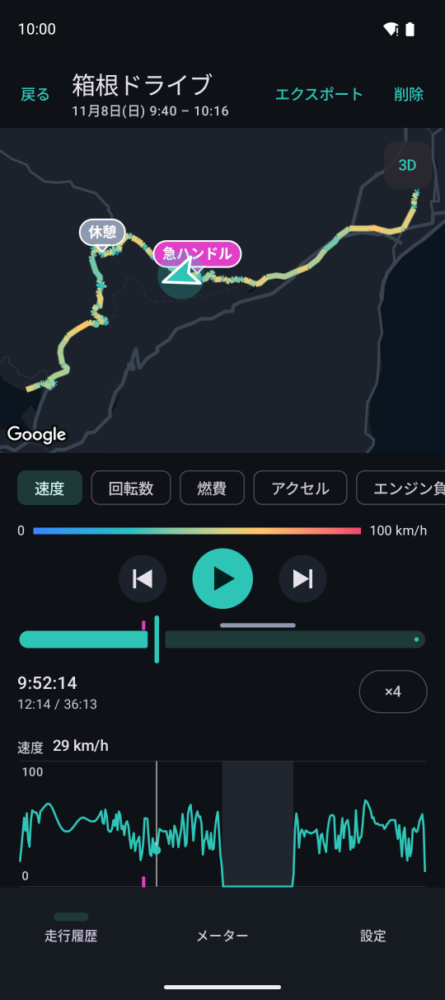
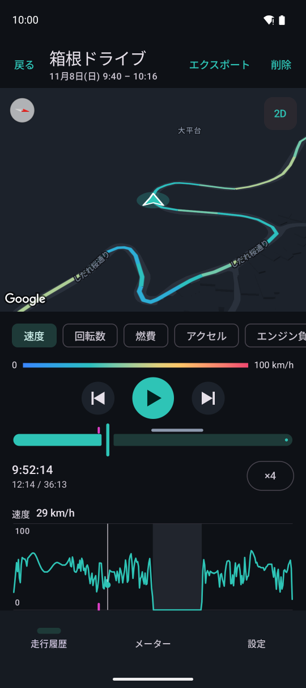
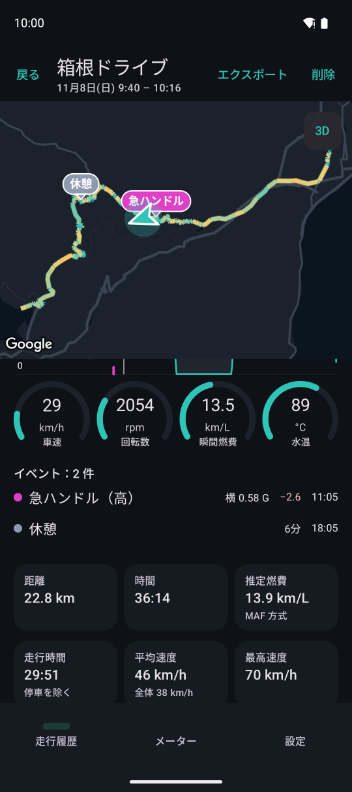
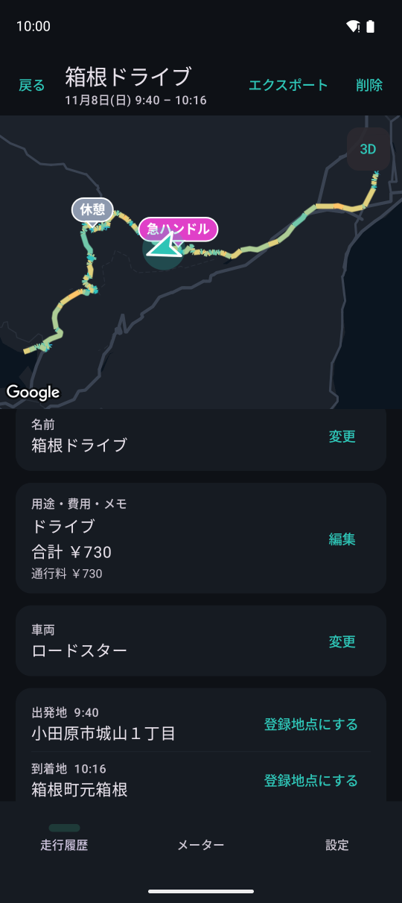
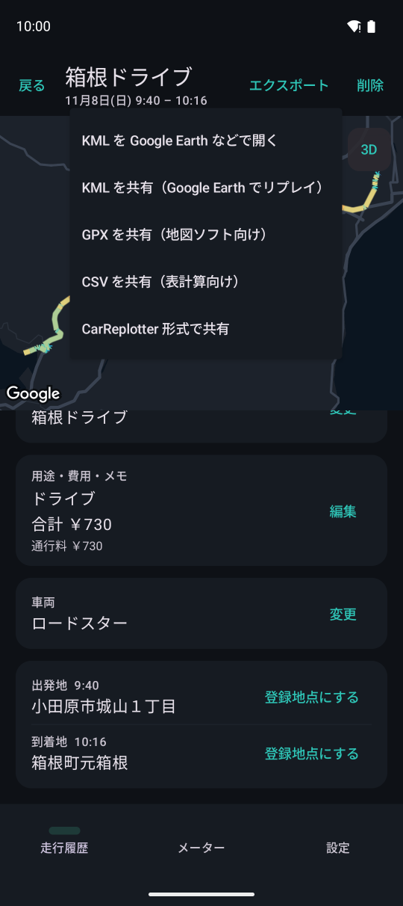

走行詳細とリプレイ
走行を地図上で再生し、そのときの速度・回転数・燃費などを確認できます。
地図と再生

1234567- 1ルートを色分けして描きます。ピンはイベント（タップで内容、その時刻へ移ります）
- 23D の地図に切り替えます
- 3色分けとグラフの値（速度・回転数・燃費・アクセル・エンジン負荷・水温・標高）
- 4再生・一時停止と前・次のイベントへ移動
- 5シークバー。上部のマーカーはイベント、長い帯は休憩
- 6再生の速さ（タップするたびに ×1・×4・×16・×60 に変更）
- 7時系列のグラフ。タップや横になぞることでその時刻へ移ります
アクセル・エンジン負荷・水温・標高の色分けとグラフはプレミアムプランの機能です（記録にある値だけ出ます）。

13D 表示の地図です。進行方向を上にして車の斜め後ろから見下ろします。都市部では建物が立体で表示されます。地図を指で動かすと車を追うのを中断し、再生すると戻ります。
- 1真上からの地図に戻します
点線の区間
- 点線：GPS の電波が弱かった区間（トンネル・屋根の下・高架下など）。前後の位置を直線で結んでいます
- 灰色の細かい点線：GPS を記録していなかった区間（位置情報の許可・端末の位置情報がオフ）
- どちらも、再生中の車は OBD の車速に合わせて直線の上を進みます（止まっていた間は進みません）
走行時の値・イベント・集計

123- 1再生している時刻での各値
- 2イベントの一覧。段階・強さ・減点・走り始めからの経過時間。タップでその時刻へ移動
- 3距離・時間・推定燃費・走行時間・平均速度・最高速度
イベントは急加速・急減速・急ハンドル・速度超過（それぞれ低・中・高の段階）と、衝撃・休憩です。どの段階から地図に出すかは設定の「走行中のイベント」で選択できます（運転スコアとイベント）。

1234- 1走行の名前
- 2用途（通勤・業務・送迎・ドライブなど）・費用（通行料・燃料代など）・メモ
- 3走った車両（あとから変更できます）
- 4出発地・到着地。登録地点に登録できます
書き出しと共有

12右上の「エクスポート」メニューです。
- 1KML（Google Earth でリプレイ）・GPX（地図ソフト向け）・CSV（表計算向け。1 秒ごとの値）
- 2CarReplotter 形式。別の端末の CarReplotter で開いてリプレイできます
CarReplotter 形式では走行開始と終了を削るかどうか（自宅や到着地点のプライバシー保護のため）や、メモと費用を含めるかを選べます。アダプターの名前・車台番号・住所は含めません。